Mechanical Engineering student working across control systems, structural analysis and mechanical design, turning ambiguous client problems into practical, evidence-based solutions.
I'm a penultimate-year Mechanical Engineering student at Deakin University, with project work spanning structural analysis, finite element validation, mechanism design and control systems. Next year I move into computational fluid dynamics alongside my final-year research project, continuing toward thermo-fluid and energy systems work.
Away from university, my best days involve being outdoors, skiing, spending time with family and playing social sport with friends. I enjoy putting myself in situations that push me outside my comfort zone, staying connected to the communities that shaped who I am, and finding small wins each day that move my understanding of the world and myself a little further forward.
Objective: Melbourne Park required a universal attachment capable of fitting five different electric chain hoists without modifying the existing equipment, while remaining under a strict 5 kg weight limit.
We benchmarked five existing products and translated the client's verbal requirements into measurable engineering criteria. I then led the structural validation of the final design using ABAQUS, evaluating static loading, buckling and vibration performance across the aluminium assembly.
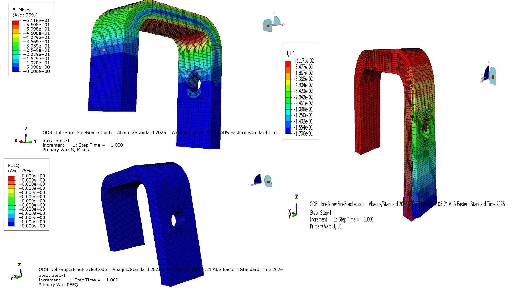
Clamp bracket FEA: stress, plastic strain and displacement (governs design at FOS 2.37×)
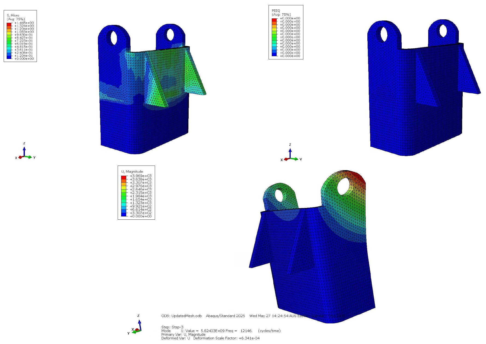
Chain guide bracket FEA: stress, plastic strain and frequency mode
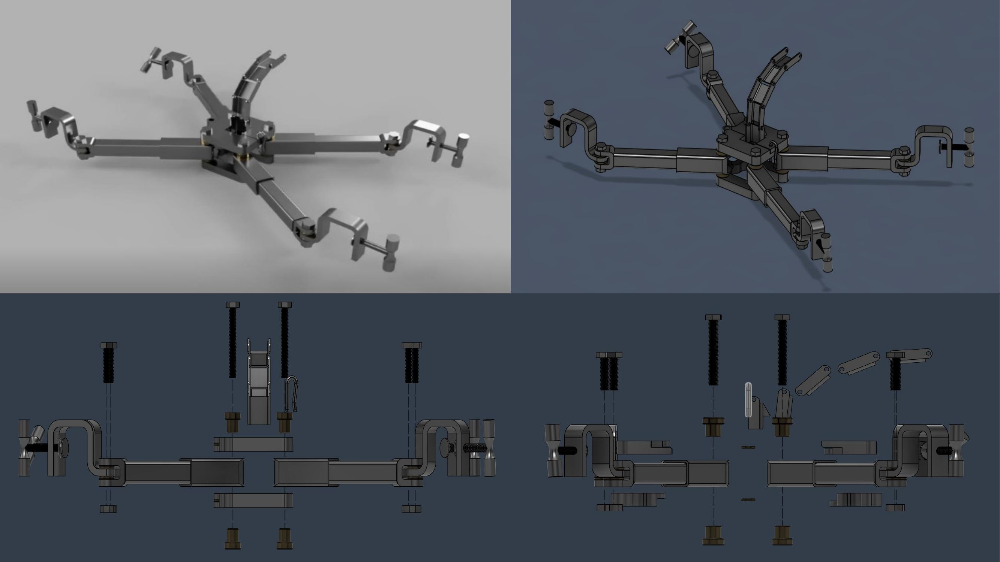
Final design: CAD assembly and exploded views
1 / 3
Result: A lightweight, structurally validated design that met every engineering requirement: under 5 kg, a minimum factor of safety of 2.37 at the critical bracket, and ready for client evaluation at Melbourne Park.
"Aleks is currently demonstrating industry-ready teamwork behaviours across all rubric areas. He manages his own responsibilities well, participates meaningfully in team discussions, communicates regular progress updates and helps maintain a respectful and collaborative team environment. He provides constructive feedback, contributes useful ideas and solutions and shows strong understanding of the required concepts. Aleks also supports project management, contributes to agreed deliverables, uses digital tools effectively and applies ethical thinking when considering design decisions. Overall, Aleks is a dependable and valuable team member who contributes strongly to the team's success."
Anonymous peer review, Product Design and Modelling, Deakin University
Chilled-Water Cooling Loop: Controller Design, Tuning and Validation
Objective: Design a single fixed-gain controller for a chilled-water cooling loop that holds two very different duties without retuning between them: pull the outlet temperature down 1 °C on command inside 120 s with under 10% overshoot, and reject a sustained loss of cooling capacity while keeping the temperature within 0.03 °C of nominal.
This was my individual scope within a university team project designing a hydrogen refuelling plant: one of four sub-systems, each taken by a different member, with the sub-systems meeting at shared interfaces. My part was the cooling loop and the fan that drives it. The plant parameters and the two test scenarios were set by the brief, so the engineering here is the controller, not the facility: a second-order linearised model, a fan with 600 rpm of authority either side of its operating point, and a specification that proportional control cannot meet.
Stability Analysis
Block-diagram reduction to the closed-loop and disturbance transfer functions
Root locus solved by hand for the breakaway at kp = 8.15, confirmed in MATLAB at 8.17
Routh array showed stability for every positive gain, so no ultimate gain exists
Tuning Progression
P, then PI, then PID, each stage triggered by a measured failure of the last
1960-design grid search across the PI gain space, evaluated on both scenarios
Closed-loop Ziegler–Nichols ruled out, open-loop reaction curve used instead
Actuator Reality
Fan saturation modelled, exposing integrator wind-up the linear design hid
Derivative moved onto the measurement to remove derivative kick
Setpoint weighting swept, then held against sensor lag and a 1.8× plant-gain spread
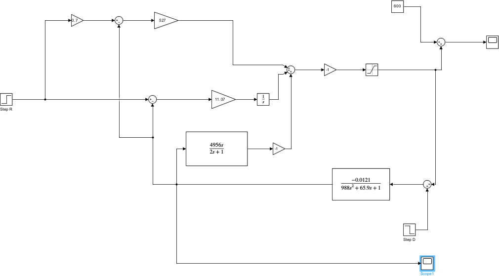
Simulink model: two-degree-of-freedom PID built from discrete gain, integrator and filtered-derivative blocks, with reverse action, fan saturation and the disturbance entering at the plant input
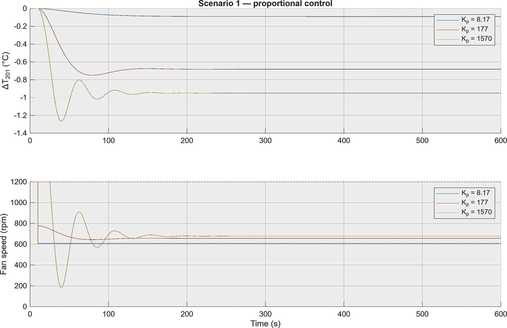
Proportional control at three gains: each one meets a different requirement and fails the others
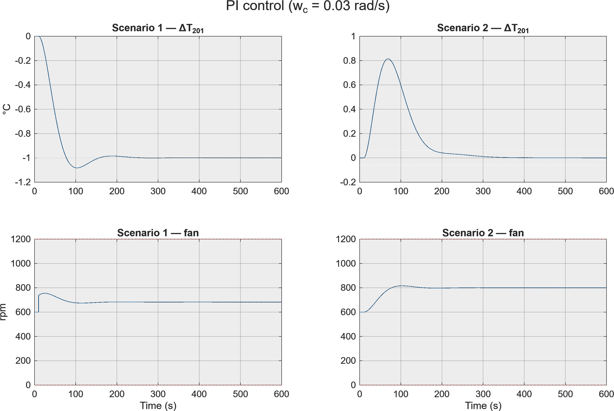
PI control removes the steady-state error but cannot meet both 120 s limits, because the pole sum is fixed
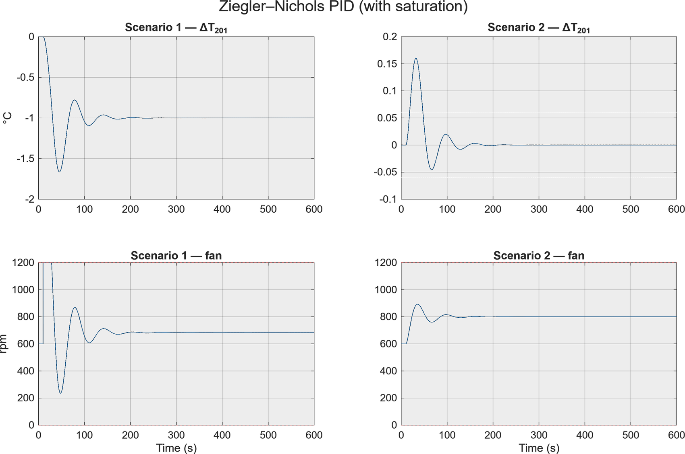
Ziegler–Nichols PID: the fan sits at its limit for about 18 s while the integrator keeps accumulating, giving 66.4% overshoot
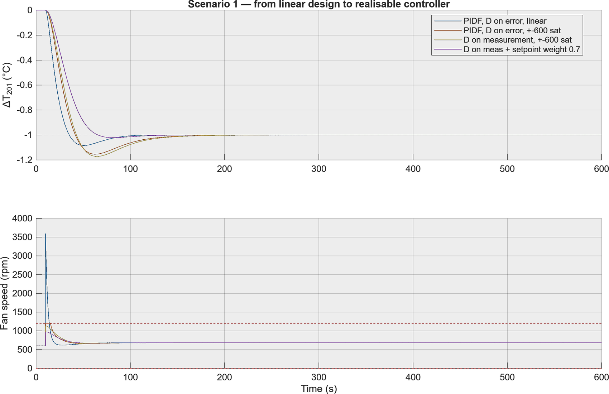
From linear design to realisable controller: the ideal design demands 3593 rpm against a 1200 rpm limit, and each fix below brings it back inside
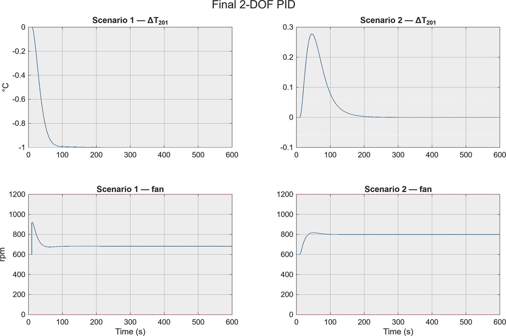
Final controller on both scenarios, same gains, no retuning
1 / 6
Result: A two-degree-of-freedom PID, kp = 527 rpm/°C, ki = 11.07, kd = 4956, derivative filter 2 s, setpoint weight 0.6. It meets both scenarios on one set of gains: zero overshoot and 68.8 s settling on the setpoint change, 98.0 s recovery and no steady-state deviation under the disturbance, with the fan peaking at 922 rpm against a 1200 rpm ceiling. Getting there took nine designs, and the useful part of the work is why each of the first eight failed.
Design iteration: nine candidates against the requirements
#
Design
Overshoot
Settling
Peak fan
Why it failed
1
P, kp = 177
10.0%
105.1 s
777 rpm
31.8% steady-state error
2
P, kp = 1570
33.2%
105.3 s
1200 rpm
Overshoot, fan saturated
3
PI, best of 1960
9.3%
133.2 s
—
Pole sum fixed, too slow
4
Ziegler–Nichols PID
66.4%
141.7 s
1200 rpm
Integrator wind-up
5
PIDF, linear only
8.4%
75.2 s
3593 rpm
Unrealisable demand
6
PIDF + saturation
15.4%
120.7 s
1200 rpm
Wind-up returns
7
Derivative on measurement
17.2%
127.0 s
1130 rpm
Slow reference zero
8
Setpoint weight b = 0.7
2.1%
78.5 s
974 rpm
Fails combined worst case
9
Setpoint weight b = 0.6 final
0.0%
68.8 s
922 rpm
Passes all
Design 5 is the one worth dwelling on. On paper it was the best controller in the set: 8.4% overshoot, 75.2 s settling, every requirement met. It also asked the fan for 3593 rpm, three times what the hardware can deliver, almost all of it derivative kick acting on the instant the setpoint steps. Nothing in the linear simulation showed that, because a linear model has no limits in it. Putting the saturation block back in turned the best design into one that overshot 15.4%, and fixing it properly meant changing the controller structure rather than the gains: derivative onto the measurement, then setpoint weighting to undo the sluggishness that introduced. Designs 5 through 9 are all the same gains. Only the structure moved.
Next steps: The final design was checked against the slower of two candidate temperature sensors and a 1.8× spread in plant gain, and it held, but only with the faster sensor specified, so that sensor is a requirement rather than a preference. Beyond that, the model is linearised about one operating point and the cooling capacity is represented as a single lag, so the next step would be re-deriving it away from nominal and adding explicit anti-wind-up rather than relying on the controller never saturating.
Rotary Servo Position Control: Identification, PD Design and Ramp Tracking
Objective: Take a rotary servo from an unknown plant to a controller that tracks a moving reference accurately. Identify the motor model experimentally, close a position loop, design PD gains to a stated overshoot specification, then quantify and remove the tracking error that remains when the reference never stops moving.
The rig is a Quanser QUBE-Servo: a 24 V direct-drive motor with an inertia disc and a 2048 count/rev optical encoder, driven from Simulink in external mode through QUARC at a 2 ms fixed step. The same rotary chain appears in a camera gimbal axis, so I framed the work against that application: amplifier, torque constant, inertia, rate feedback, position integration and encoder feedback all have direct equivalents.
System Identification
Bump test on the open-loop plant to fit a first-order velocity model
Gain from Δωss/ΔVm; time constant at 63.2% of final value
Identified K = 23.206 rad/s/V and τ = 0.0923 s
Controller Design
Integrator added for position, giving K/[s(τs+1)]
Second-order form matched to get ωn and ζ from kp and kd
Derivative taken on the measurement, not the error, to avoid derivative kick
Filtered differentiator 100s/(s+100) to stop encoder noise being amplified
Tracking Analysis
Error transfer function derived and the Final Value Theorem applied
PD ramp error predicted as R0(1+Kkd)/Kkp
Integral action tested at ki = 0, 5 and 15 to lift the system from Type 1 to Type 2
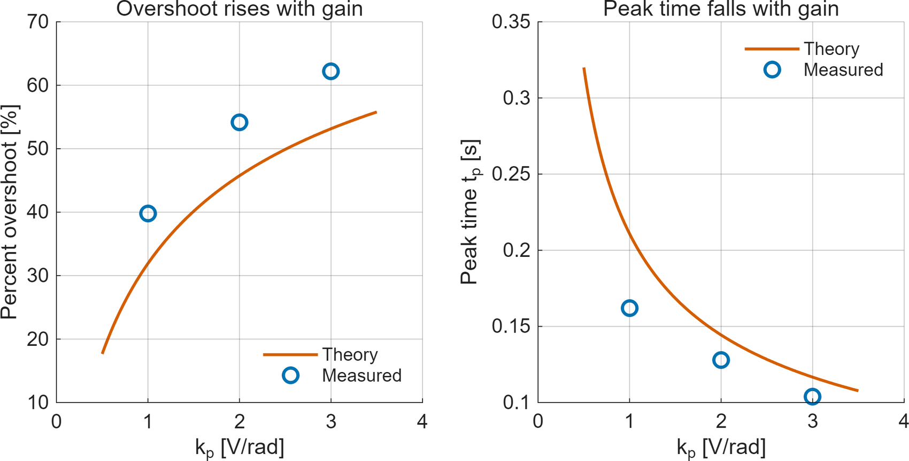
Proportional gain sweep: measured overshoot and peak time against the second-order prediction
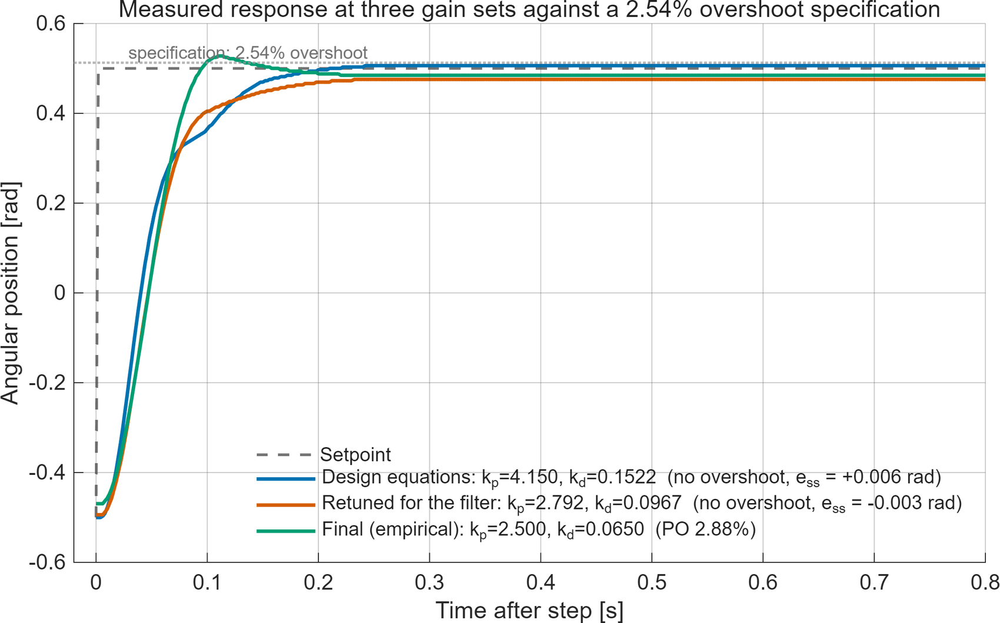
Three gain sets against the 2.54% overshoot specification: the design equations produced no overshoot at all
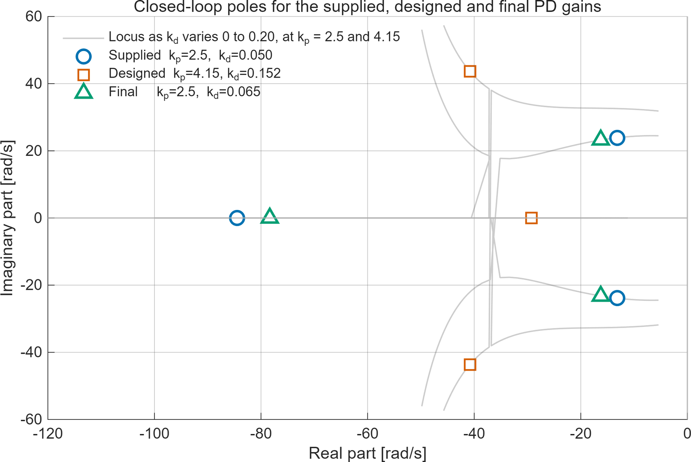
Closed-loop poles for the supplied, designed and final gains, over the locus traced as kd varies
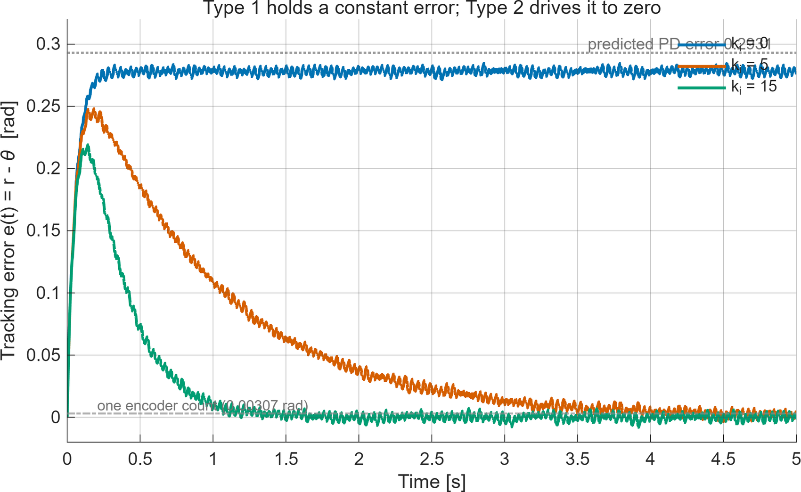
Ramp tracking error: PD holds a constant offset, integral action drives it into the one-count encoder band
1 / 4
Result: The PD design equations did not survive contact with the hardware. Gains calculated for a 2.54% overshoot specification produced a response with no overshoot at all, because the derivative filter that keeps encoder noise out of the loop also changes the dynamics the design equations assumed. Retuning with the filter in place did the same thing. The gains that actually met the specification were found empirically at kp = 2.5 and kd = 0.065, giving 2.88% overshoot against the 2.54% target. The steady-state work went the other way: the derived ramp error predicted 0.2931 rad and the rig measured 0.2782 rad, a 5.1% agreement that held up the whole model chain.
Predicted against measured
Quantity
Predicted
Measured
Outcome
PD ramp error, R0 = 5 rad/s
0.2931 rad
0.2782 rad
5.1%
Controller voltage from the error law
0.1410 V
0.1405 V
0.4%
Controller voltage from the plant model gap
0.2155 V
0.1405 V
34.8%
PD overshoot at the final gains
2.54%
2.88%
Spec met
Ramp error with ki = 15
0 rad
< 1 encoder count by 1.4 s
Type 2
That third row is the interesting one. The identified plant said 0.2155 V was needed to hold 5 rad/s; the logged command averaged 0.1405 V, a 34.8% shortfall that looks at first like a controller fault. Substituting the measured tracking error back into the control law returns 0.1410 V, within half a millivolt of what was logged. The controller was doing exactly what its equation said. The discrepancy sits in the plant model: the effective motor gain at 0.14 V is not the gain identified during a step test that ran at a much higher operating point, which deadband compensation and friction would both explain.
Next steps: Identify the plant across the operating range rather than at one point, so the model stays usable at the low voltages where the controller actually works. Include the derivative filter in the design equations instead of adding it afterwards, since it moved the response far enough to make the analytical gains useless. Push ki until wind-up and saturation appear, because the tested range was nowhere near the limit and five seconds was not long enough to call ki = 15 an optimum.
Jansen Leg Linkage: Synthesis, Analysis and Prototype
Objective: Synthesise a single-degree-of-freedom walking linkage to a specified gait: 86 mm step length at 0.05 m/s body speed, driven by one crank at 15 rpm, with six legs phased so a foot is always in contact with the ground.
The attraction of the Jansen linkage is that one crank drives the whole leg through pin joints only, with no sliders, so several legs can share a crankshaft cheaply. I verified the design five independent ways: hand calculation, MATLAB vector-loop solution, Simscape multibody simulation, Fusion 360 assembly, and a physical foamboard prototype built from 1:1 printed templates.
Mobility & Synthesis
Gruebler's equation: DoF = 3(8−1) − 2(10) = 1
Grashof check on both four-bar loops confirmed full 360° crank rotation
Foot path scaled to the 86 mm step length specification
Kinematic Analysis
Five link groups solved in sequence by Norton's K-method
Position, velocity and acceleration resolved at every pin
Transmission angles checked across stance and swing
Verification
Fusion assembly agreed with MATLAB to within 0.5 mm at every pin
Simscape matched the analytical foot path, velocity and acceleration
Physical prototype built and measured against predicted gait
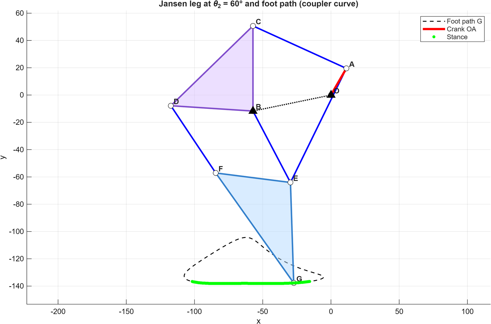
Linkage at θ₂ = 60° with the foot path (coupler curve) and stance phase traced
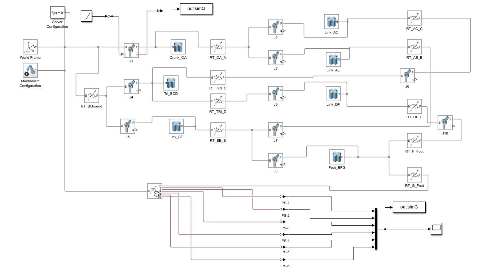
Simscape Multibody model: ten joints, link solids and rigid transforms resolving the leg
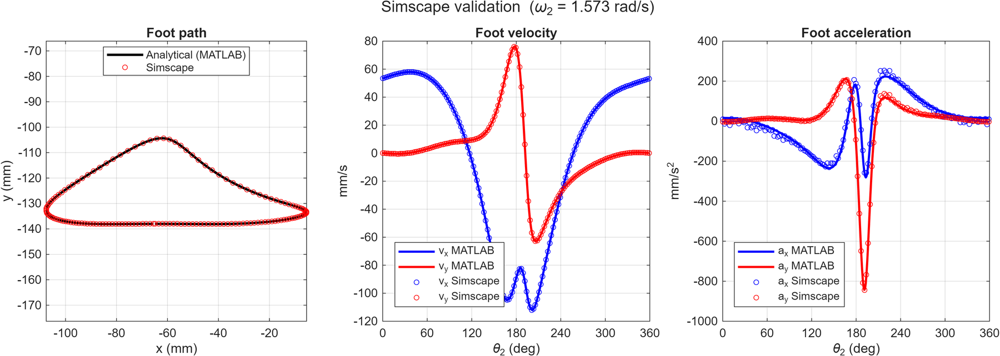
Simscape validation: analytical MATLAB (lines) against multibody simulation (markers)
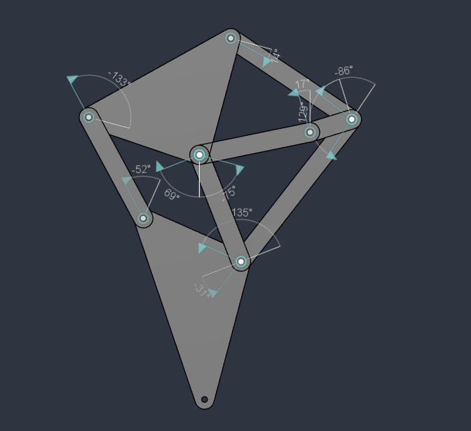
Fusion 360 assembly with joint angles at the analysed crank position
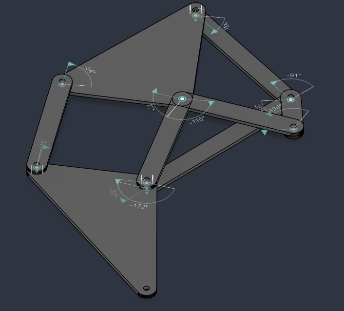
Isometric view of the same assembly, with every pin joint and its measured angle exposed
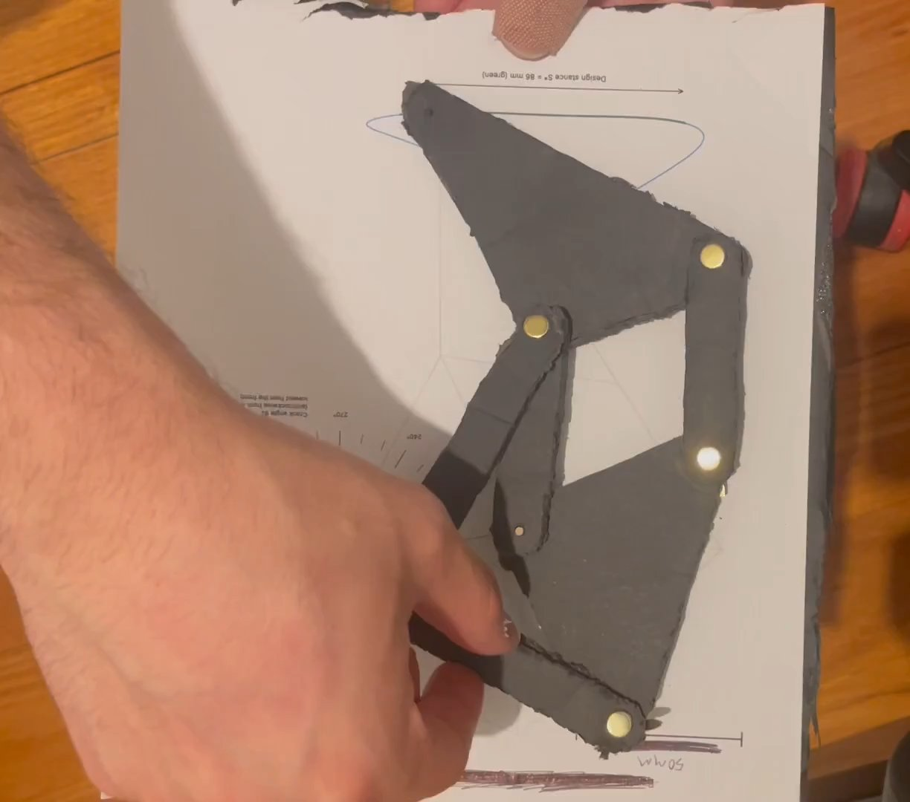
Foamboard prototype over the 1:1 template, with the crank-angle protractor and predicted foot path beneath
1 / 6
Result: The analysis chain held together: Fusion, Simscape and the hand calculations all agreed, and the prototype walked with no stiff points, with lift-off to swing occurring where the model predicted. The physical gait itself came up short of target, and the gap between a model that agrees with itself and hardware that matches the model is the part worth reporting honestly.
Prototype measured against analysis
Quantity
Target
Analysis
Measured
Error
Crank speed
15 rpm
15.0 rpm
16 rpm
+6.7%
Step length gap
86 mm
86.0 mm
—
−30%
Body speed gap
0.05 m/s
0.05 m/s
0.037 m/s
−26%
Stiff points
None
None
None observed
Matches
Next steps: The crank speed and gait shape carried over well, but step length and body speed both fell roughly a quarter short. Foam board at 5 mm with pierced split-pin holes gives real joint clearance and link flexure, so the effective link lengths are not what the template specified. The next build would use a rigid material with reamed pin holes and bushes, and measure the foot path directly against the predicted curve rather than inferring it from body speed.
Sheet 05 / 06Client: City of StonningtonYear: 2025Tools: SPACE GASS
Cyclist & Pedestrian Bridge, City of Stonnington
Objective: Design and verify the preliminary structural system for a cable-stayed cyclist and pedestrian bridge for the City of Stonnington. The scope covered modelling the bridge in SPACE GASS, performing independent hand calculations, selecting steel members, designing the footing and validating all software outputs.
Structural Analysis
Created a 3D SPACE GASS model of the bridge
Applied dead, live and wind loading combinations
Determined governing member forces and support reactions
Verification
Checked bending, shear and axial capacities by hand
Verified footing bearing, sliding and overturning stability
Compared hand calculations against software outputs
Design Iteration
Updated footing after allowable bearing pressure reduced to 100 kPa
Re-checked stability and eccentricity
Identified main girder overstress requiring further optimisation
Member selection covered a 900WB257 welded beam for the main girder, 310UB40.4 crossbeams and a 219.1×6.4 mm CHS backstay, all in Grade 300/C350 steel.
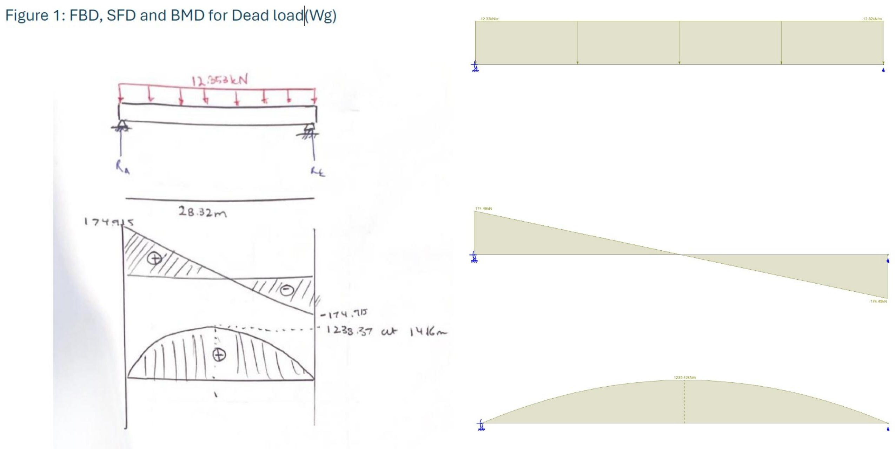
Main girder: hand calculations (left) vs. SPACE GASS verification (right)
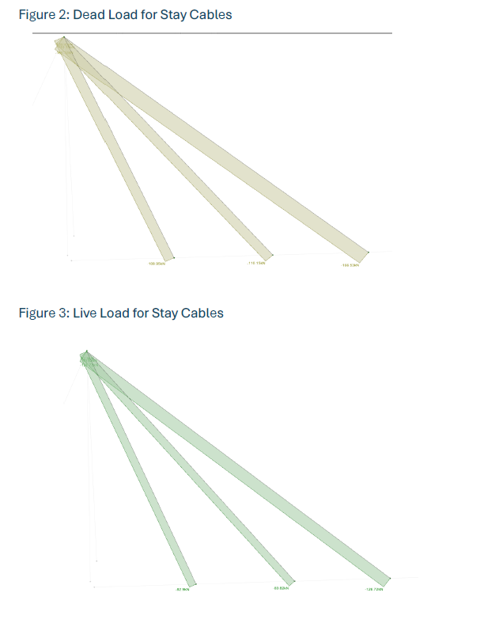
SPACE GASS: stay cable axial forces, dead load (top) and live load (bottom)
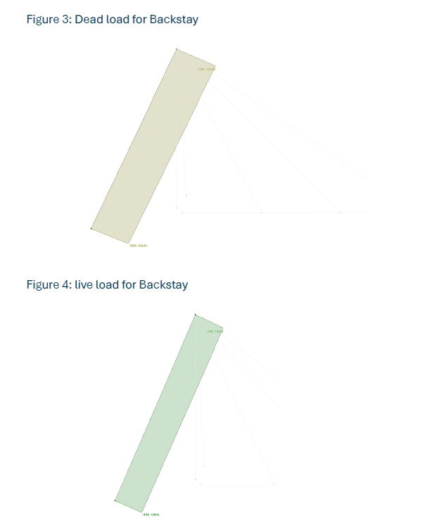
SPACE GASS: backstay axial forces, dead load (top) and live load (bottom)
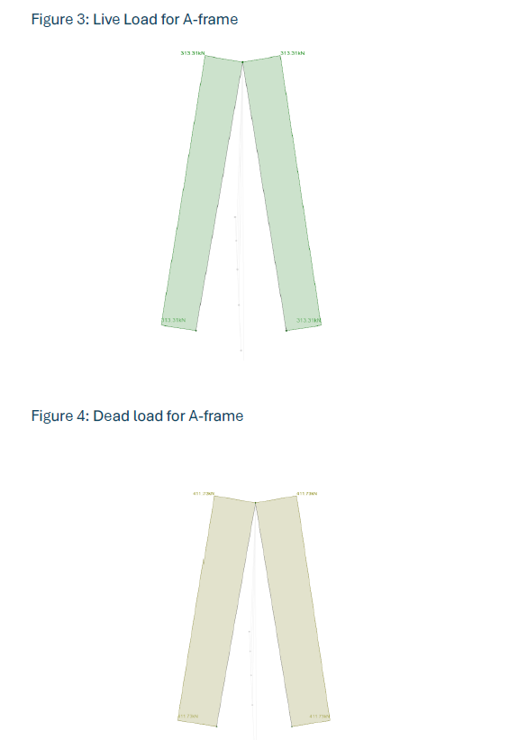
SPACE GASS: A-frame tower axial forces, live load (top) and dead load (bottom)
1 / 4
Result: The redesigned footing held compliance under the revised geotechnical constraints with comfortable margin. The main girder identified a combined biaxial stress exceedance under simultaneous wind and gravity loading, flagged rather than concealed, as identifying overstress is exactly what a preliminary design review is meant to surface.
Load case verification: revised footing
Check
Requirement
Result
Bearing
FOS ≥ 3.0
FOS 3.58
Sliding
FOS ≥ 1.5
FOS 9.54
Overturning
FOS ≥ 1.5
FOS 21.72
Main girder biaxial stress flagged
σ ≤ 310 MPa
376.5 MPa, needs revision
Next steps: The main girder passed bending and shear but didn't satisfy the biaxial stress check under combined wind and gravity loading, or the lateral deflection limit under wind. The next step would be to model the full lateral restraint system, the A-frame, stay cables and bracing, rather than treating the girder as resisting wind alone. If the interaction check still didn't pass, the section would need to be revised for greater lateral stiffness, alongside fatigue assessment over the design life.
"During discussions, Aleks would actively listen and consider everyone's position and would ask questions to ensure he grasped the information in a helpful way. Aleks is a reliable team member with a good attitude."
Anonymous peer review, Structural Design, Deakin University
Objective: Design and build an autonomous seed collection mechanism for the 2024 Weir Warman "Project FAMINE" competition. The robot was required to autonomously collect and deposit seed pods within a 400 mm cube and complete the task in under 120 seconds. My primary responsibility was the drivetrain and arm mechanism, including CAD design, Arduino control logic, mechanical integration and system testing.
Design specifications
Competition Constraints
400 × 400 × 400 mm starting volume
Autonomous operation
Single activation
120-second time limit
Hardware
Arduino Uno
DC gearmotor
Servo motor
Spur gear drivetrain
Laser-cut plywood chassis
3D printed components
Software
Arduino IDE
Fusion 360
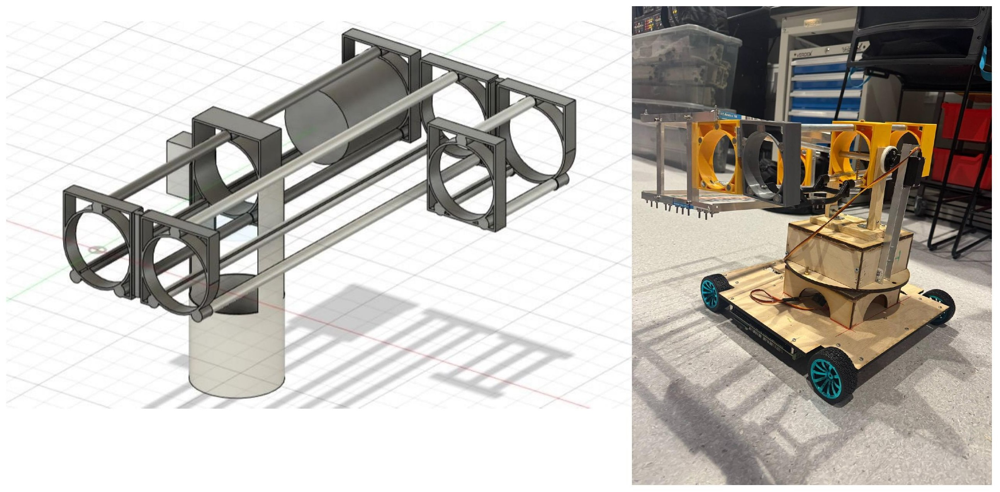
Collapsed position: CAD model and physical build
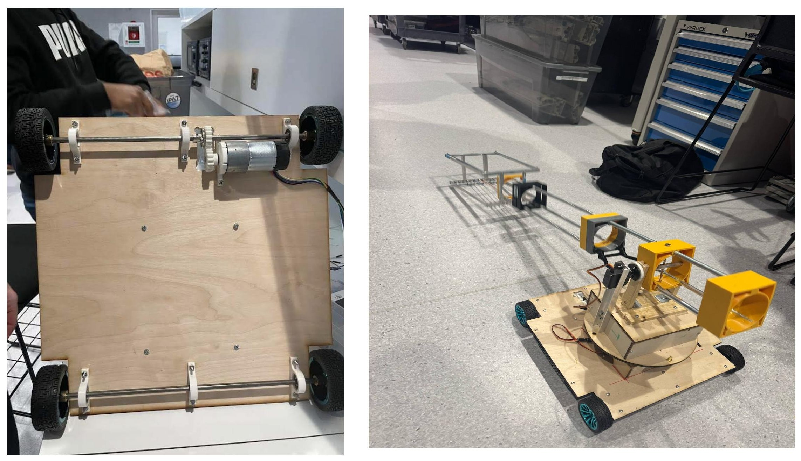
Drivetrain and cog detail, arm fully extended
1 / 2
Key engineering decisions
Drivetrain
Designed a spur gear transmission to transfer motor torque directly to the steel drive shaft while maintaining compact packaging within the competition volume.
Arm Mechanism
Implemented servo-controlled positioning with predefined pickup and deposit angles to improve repeatability across different seed heights.
Structural Design
Designed the frame to remain within the competition volume while providing sufficient stiffness for arm operation without adding unnecessary mass.
Integration
Balanced packaging constraints between electronics, drivetrain and collection arm during assembly to ensure all subsystems could operate without interference.
Engineering workflow
Problem Definition
→
Concept Generation
→
CAD Design
→
Prototype Manufacture
→
Arduino Programming
→
System Integration
→
Testing & Iteration
→
Competition Entry
Reflection: The drivetrain and arm mechanism performed as intended during testing, however motor reliability issues emerged late in the project and could not be fully resolved before competition. This reinforced the importance of integrating subsystem testing much earlier in the development process rather than leaving full-system validation until the final stages.
Sheet 07 / Toolkit
Bill of materials
No.
Item
Category
Applied in
01
MATLAB
Modelling & analysis
Servo control · Jansen leg
02
Simulink
Control systems
Servo control
03
Simscape Multibody
Dynamics
Jansen leg
04
ANSYS Fluent
CFD
Heat sink lab
05
ABAQUS FEA
Structural & analysis
SpiderGuide
06
SPACE GASS
Structural & analysis
Bridge
07
Fusion 360
CAD
SpiderGuide · Jansen leg
08
Arduino / C++
Embedded
Warman Challenge
09
Python
Programming
Coursework
Working style
Clear communication & technical presentation
Analytical problem-solving
Teamwork & collaboration
Stakeholder engagement
Time management & adaptability
End of sheet
Get in touch
Open to mechanical engineering internships and placements from late 2026. The fastest way to reach me: